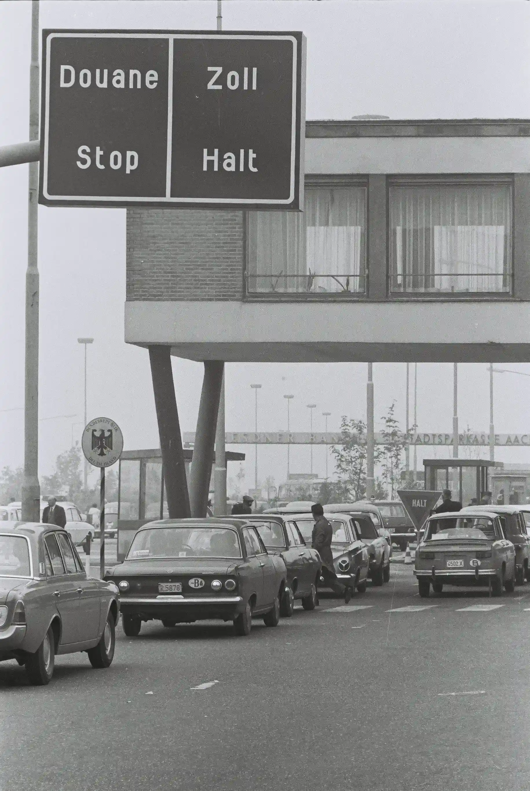
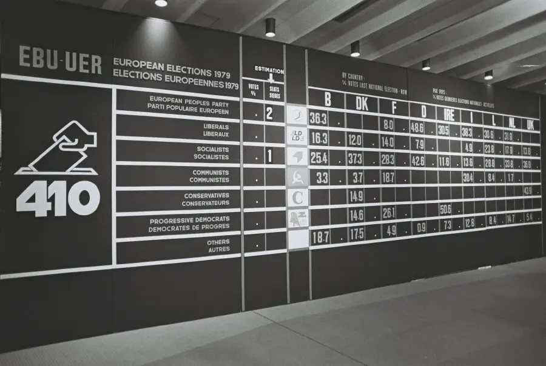
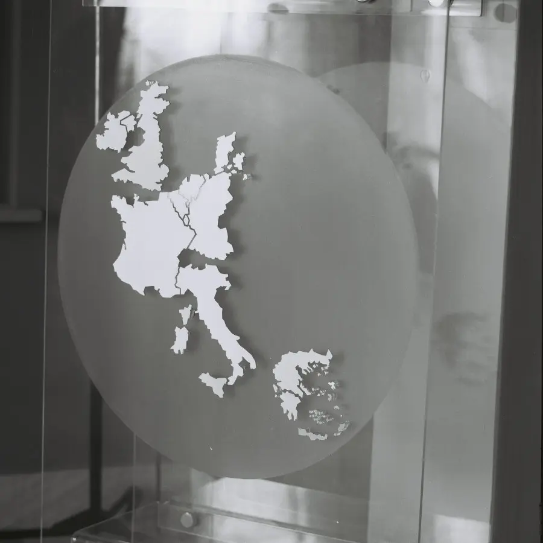
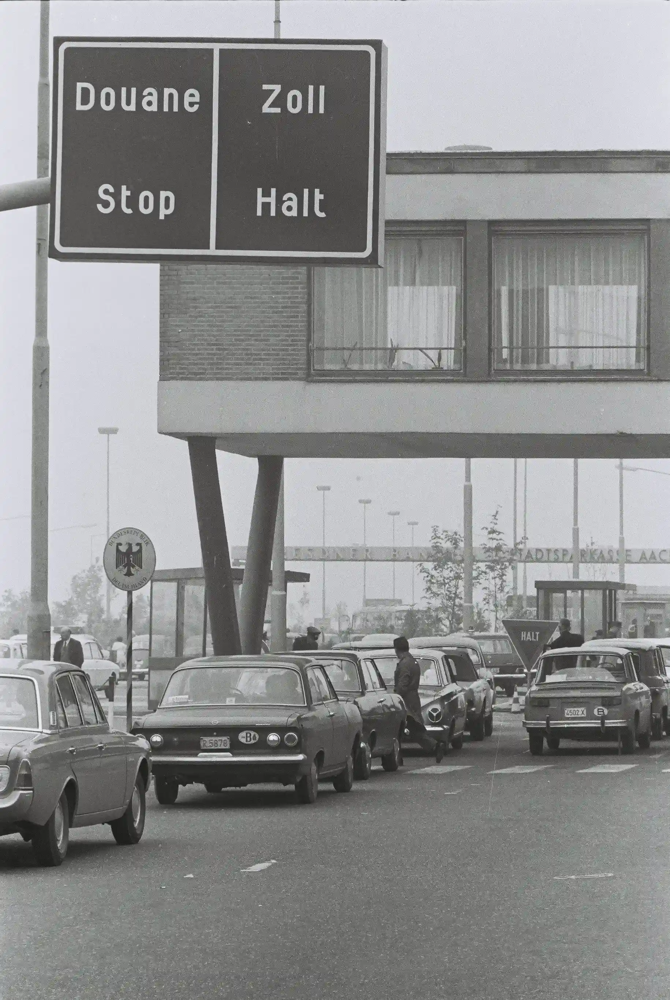
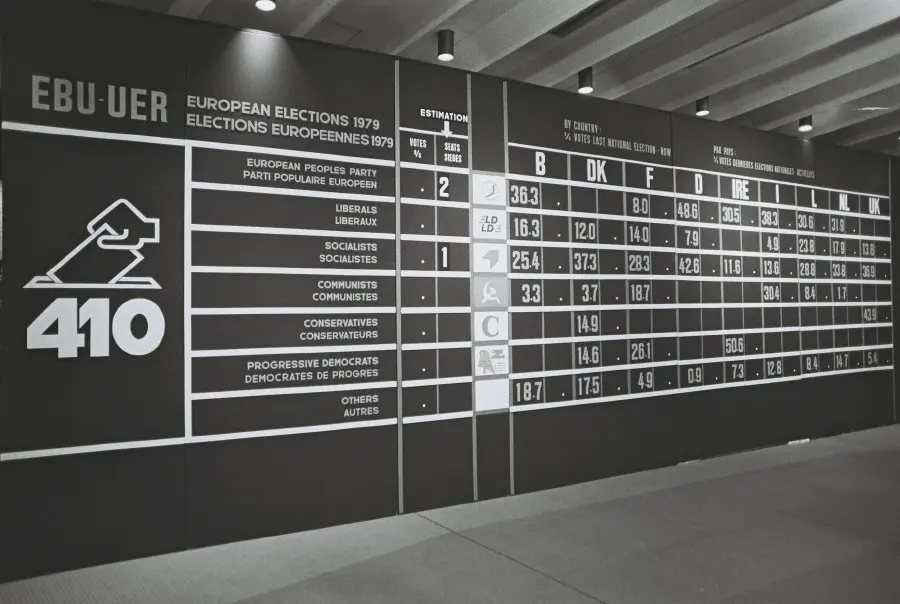
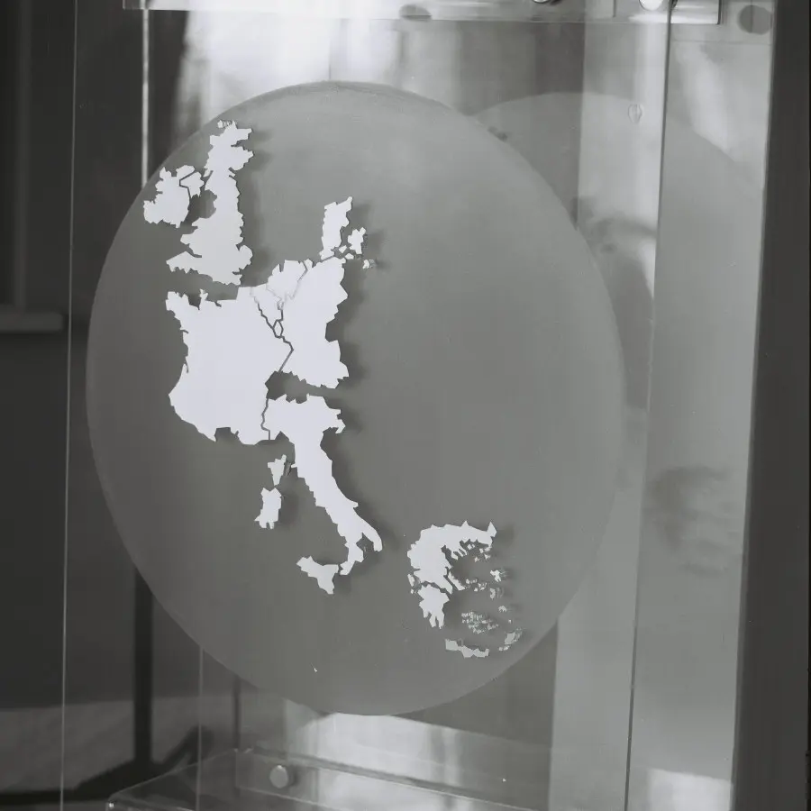

{exemple de chronologie dynamique}
 





18 avril - La Communauté européenne du charbon et de l’acier (CECA) est créée avec la signature du traité de Paris par six pays : Belgique, France, Italie, Luxembourg, Pays-Bas, République fédérale d’Allemagne.
25 mars - Le traité de Rome institue la Communauté économique européenne (CEE), qui a pour but la mise en place d’un marché commun.
1er juillet - Les droits de douane entre les six membres de la CEE sont totalement supprimés. Un tarif douanier commun est mis en place aux frontières extérieures de la CEE.
1er janvier - Le Danemark, l’Irlande et le Royaume-Uni adhèrent à la CEE.
Juin - Jusqu’alors désignés par les parlements nationaux, les députés européens sont pour la première fois élus au suffrage universel direct par les citoyens des Etats membres.
1er juin - La Grèce entre dans la CEE, qui compte désormais 10 membres.
14 juin - La Belgique, la France, le Luxembourg, les Pays-Bas et la RFA signent des accords prévoyant la suppression progressive des frontières entre ces États et la libre circulation des personnes. Ces accords n’entreront en vigueur qu’en 1995.
1er janvier - Troisième élargissement de la CEE avec l’adhésion de l’Espagne et du Portugal.
7 février - Signature du traité de Maastricht sur l’Union européenne. Il instaure une citoyenneté européenne, renforce les pouvoirs du parlement européen et met en route l’union économique et monétaire.
1er janvier - L’UE compte 15 membres après l’entrée de l’Autriche, de la Finlande et de la Suède.
1er janvier - L’euro devient la monnaie officielle unique de 11 des 15 Etats membres.
1er mai - Dix pays rejoignent l’UE : Chypre, Estonie, Hongrie, Lettonie, Lituanie, Malte, Pologne, République tchèque, Slovaquie, Slovénie.
1er janvier - Adhésion de la Roumanie et de la Bulgarie.
1er janvier - Entrée en vigueur du traité signé en 2007 afin de dépasser le blocage institutionnel engendré par le rejet du projet de Constitution européenne en 2005.
1er juillet - La Croatie devient le 28e membre de l’Union européenne.
31 décembre - Le Royaume-Uni sort officiellement de l’Union européenne, à la suite du référendum de 2016 lors duquel le « Brexit » a recueilli 51,9% des voix.